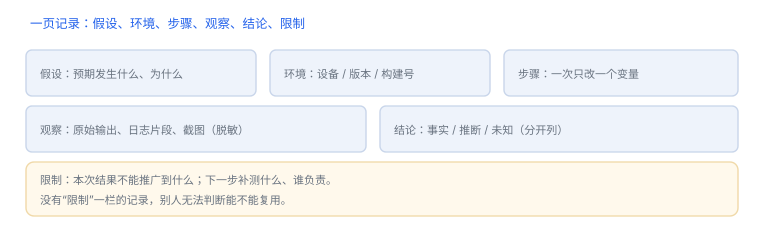

术语与实验记录模板
术语对齐能省掉一半的沟通成本
同一个词在不同语境里含义不同，是安全讨论中最常见的误解来源。下面的表只给“最小共识”，细节仍需回到对应章节与官方文档。
1. 术语速览
| 术语 | 一句话定义 | 别混淆 |
|---|---|---|
| 沙盒 | 进程创建时施加的资源访问限制 | 不等于用户权限（TCC） |
| entitlement | 签名中声明的系统能力 | 不等于业务授权 |
| TCC | 用户对隐私数据访问的授权记录 | 不等于沙盒规则 |
| cdhash | 代码签名的整体摘要 | 随构建变化，不是固定常量 |
| UUID | 单个映像构建的唯一标识 | 与设备标识、应用标识不同 |
| slide | 映像本次加载的地址偏移 | 每次启动不同 |
| vmaddr | Mach-O 中描述的首选虚拟地址 | 不是运行时地址 |
| dyld | 动态链接器 | 不是内核的一部分 |
| Mach 端口 | 带权能的通信端点 | 不是网络端口 |
| Jetsam | 系统因内存压力终止进程的机制 | 不是崩溃 |
| Watchdog | 系统因无响应终止进程的机制 | 报告形态与崩溃不同 |
| 数据保护 | 文件密钥与设备锁定状态绑定的策略 | 不是应用自定义加密 |
2. 实验记录模板
可直接复制的记录结构
标题：一句话说明要验证什么
日期：
环境：设备型号 / 系统版本 / 构建号 / 工具与版本
假设：预期会发生什么，为什么
步骤：1) 2) 3)（一次只改一个变量）
观察：原始输出、日志片段、截图（脱敏）
结论：事实 / 推断 / 未知（分别列出）
限制：本次结果不能推广到什么
后续：需要补测什么、谁负责
3. 写记录的三个习惯
- 先写假设：没有假设的观察会变成“什么都记一点”，事后无法判断相关性。
- 保留原始输出：转述会丢失关键字段，尤其是错误码与路径。
- 标注限制：“在 A 机型 B 版本上成立”远好于“已验证”。
4. 记录字段：六项最小集
| 字段 | 作用 |
|---|---|
| 假设 | 决定记录什么 |
| 原始输出 | 保留可复核证据 |
| 限制 | 说明结论适用范围 |
没有假设就没有记录
先写“我预期看到什么”，再看输出；否则记下来的是噪音。
先写“我预期看到什么”，再看输出；否则记下来的是噪音。
5. 填写示例
一条完整记录
假设：登录后列表页会缓存首屏数据到磁盘
环境：测试机 / iOS 18.1 / 构建 1.4.2 (a1b2c3)
步骤：登录 → 进入列表 → 杀进程 → 重开
观察：重开后无网络请求，列表立即出现；容器内找到 records.db
结论：事实——存在磁盘缓存；推断——首屏读缓存；未知——缓存是否加密
限制：仅验证首屏，未覆盖下拉刷新6. 记录质量三问
| 问题 | 不合格的表现 |
|---|---|
| 别人能复现吗？ | 只写“验证通过”，没有步骤与环境 |
| 结论有边界吗？ | 从一次实验推广到所有版本 |
| 证据能回看吗？ | 只有结论，没有原始输出或截图 |
7. 自测
- 沙盒与 TCC 各自回答什么问题？
- 为什么 cdhash 不能作为业务常量？
- 实验记录里“限制”一栏应写什么？